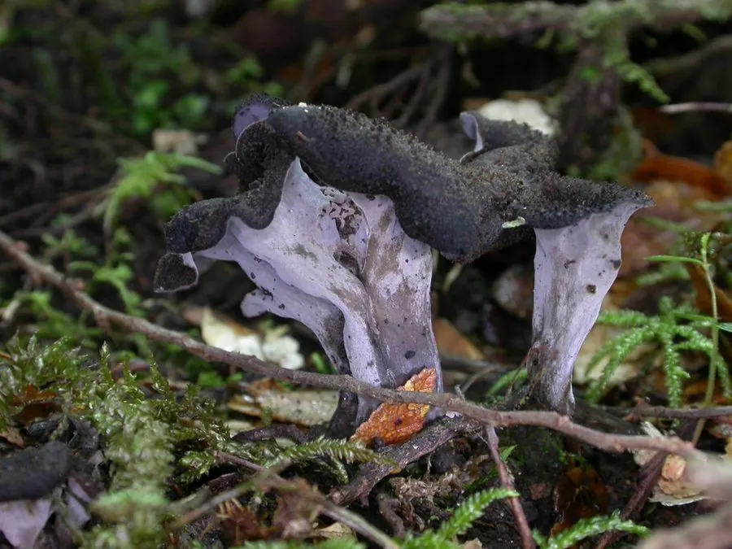

真菌 · 真菌界
灰喇叭菌 Craterellus cornucopioides

灰喇叭菌的子实体呈深灰黑色的漏斗或号角状，边缘波浪卷曲，是著名的野生食用菌，干制后香气浓郁，常被称为“黑喇叭菌”。
- 分类
- 门担子菌门纲伞菌纲目鸡油菌目科鸡油菌科属喇叭菌属
- 栖息环境
- 阔叶林地面，尤其栎林与山毛榉林，与树木形成菌根
- 地理分布
- 欧洲、北美与东亚，中国西南和华北林区有分布
- 保护级别
- 暂无评估（IUCN 未评估，中国未列入重点保护名录）
物种志
灰喇叭菌是担子菌门鸡油菌科的真菌，子实体呈漏斗状、号角状或喇叭状，高 3–10 cm，开口直径 2–6 cm，向下逐渐收窄成细长的柄状。内表面灰黑色至黑褐色，光滑或略带粉霜；外表面（子实层）呈灰白色至淡灰色，有细密的皱褶和脉纹，但没有真正的菌褶；边缘薄而呈波浪状，常向外翻卷。孢子印淡黄色至白色。
灰喇叭菌生于阔叶林，尤其是栎树、山毛榉林的地面，与树木形成菌根，夏秋季出菇，在欧洲、北美和东亚都有分布，中国西南和华北林区有记录。它颜色深、藏在落叶中，不易被发现，但香气十分浓郁，是著名的野生食用菌，鲜食可炒、可炖，干制后香气更浓，常被称为“黑喇叭菌”或“穷人松露”。采集时要仔细检查，避免与颜色相近的毒菌混淆。
形态与习性
- 子实体漏斗状或号角状，高 3–10 cm
- 内表面灰黑色至黑褐色，光滑
- 外表面灰白色，有皱褶和脉纹
- 菌褶无真正的菌褶，仅有皱褶
- 孢子印淡黄色至白色
- 食用性可食，干制后香气浓郁
- 生境阔叶林地面，与树木形成菌根
趣味知识
- 灰喇叭菌通体深灰黑色，像一支小号角插在落叶里。
- 它的外表面只有皱褶、没有真正的菌褶，是辨认的关键。
- 干制后香气更浓，在欧洲被称为“穷人松露”。
- 它颜色深、藏在落叶中，采菌时要仔细翻找。